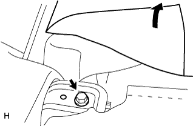
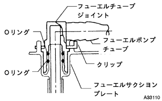

フューエル ポンプ（1NZ-FE(4WD)） 取り外し |
| 1. リヤシートバックASSY取りはずし |
 |
リヤシートバックを前倒位置にする。
図の位置のクリップ2個を取りはずす。
|  |
リヤシートバックカバーをめくりボルト2本をはずし、リヤシートバックASSYを取りはずす。
| 2. リヤシートクッションASSY取りはずし |
 |
前部のロックのレバーを図の矢印の方向に押してかん合をはずす。
リヤシートベルトを、リヤシートクッションカバー & パッド後部のゴムバンドに通す。
リヤシートクッションASSY後部のフックのかん合をはずし、リヤシートクッションASSYを取りはずす。
| 3. リヤフロアサービスホール カバー取りはずし |
 |
フロアマットをめくる。
スクリュー４本をはずし、リヤフロアサービスホールカバーをはずす。
フューエルポンプコネクターを切り離す。
| 4. 燃料流出防止作業 |
 |
フューエルポンプASSY用のコネクターを切り離す。
エンジン始動
エンジンを始動する。
エンジンが自然に停止したあと、イグニッションスイッチをOFFにする。
再度エンジンをクランキングし、始動しないことを確認する。
フューエルタンクキャップをはずし、フューエルタンク内の圧力を抜く。
バッテリのマイナスターミナルを取りはずす。
参照フューエルポンプASSYのコネクターを取り付ける。
| 5. フューエルタンク メインチューブ切り離し |
 |
チューブジョイントクリップ先端を広げ、矢印方向に引き抜く。
|  |
メインチューブを引き抜いて切り離す。
| 6. フューエルサクションチューブASSY W/ポンプ&ゲージ取りはずし |
 |
ボルト8本をはずし、フューエルタンクベントチューブセットプレートを取りはずす。
 |
図のフューエルホースを切り離し、フューエルタンクよりフューエルサクションチューブASSY W/ポンプ & ゲージを取りはずす。
フューエルサクションチューブASSY W/ポンプ & ゲージよりガスケットを取りはずす。